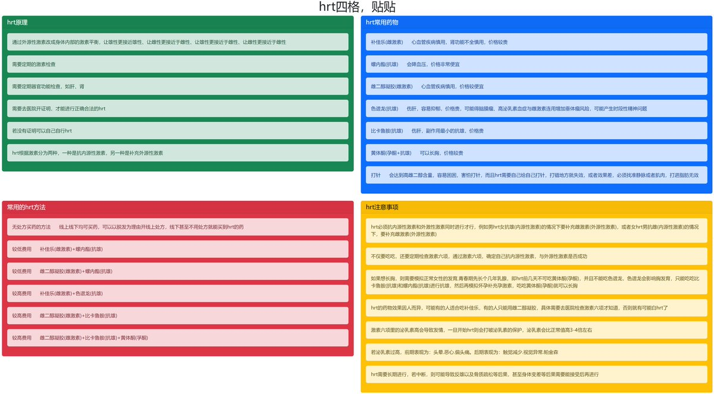
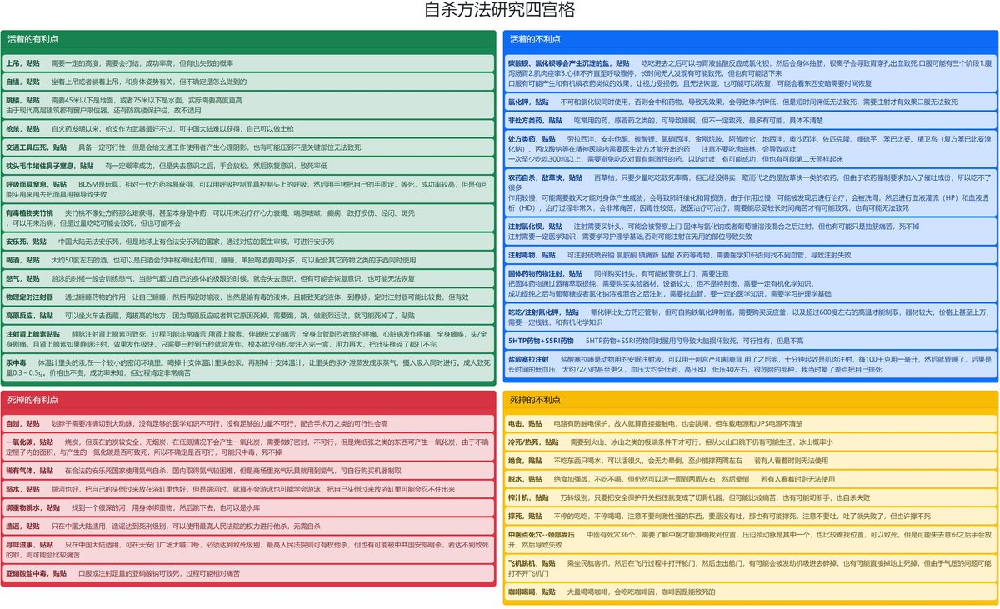
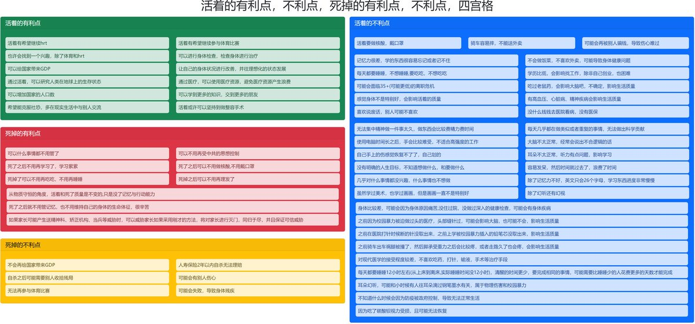
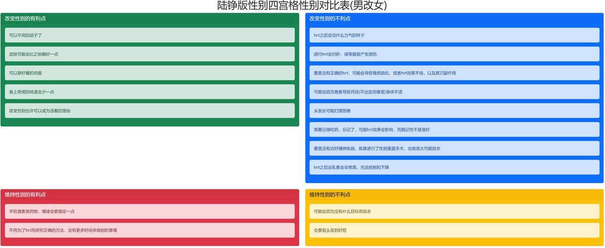

cut ocean hey fish。我接触的第一个自杀的人。
21年当时年幼的我看着她总是发负面的好多话，特别好奇，一直在观察这个大姐姐。后来我上学去了，也因为当时对色情更感兴趣一点，就取关了，就再没看过鱼鱼了。当时印象里她的粉丝还只有一二十个，没想到多年过去，她竟然死了。而且有那么多她的朋友打听她的消息，不惜追溯一年也要把她的死讯打听到。不禁让我有些感慨。如今却是没人关注她了。大家不要忘记死者然后又一批一批赴死好不好。不要再重复我21年就见过的历史了。大家吸收掉历史经验，努力活下去好不好。
21年当时年幼的我看着她总是发负面的好多话，特别好奇，一直在观察这个大姐姐。后来我上学去了，也因为当时对色情更感兴趣一点，就取关了，就再没看过鱼鱼了。当时印象里她的粉丝还只有一二十个，没想到多年过去，她竟然死了。而且有那么多她的朋友打听她的消息，不惜追溯一年也要把她的死讯打听到。不禁让我有些感慨。如今却是没人关注她了。大家不要忘记死者然后又一批一批赴死好不好。不要再重复我21年就见过的历史了。大家吸收掉历史经验，努力活下去好不好。



